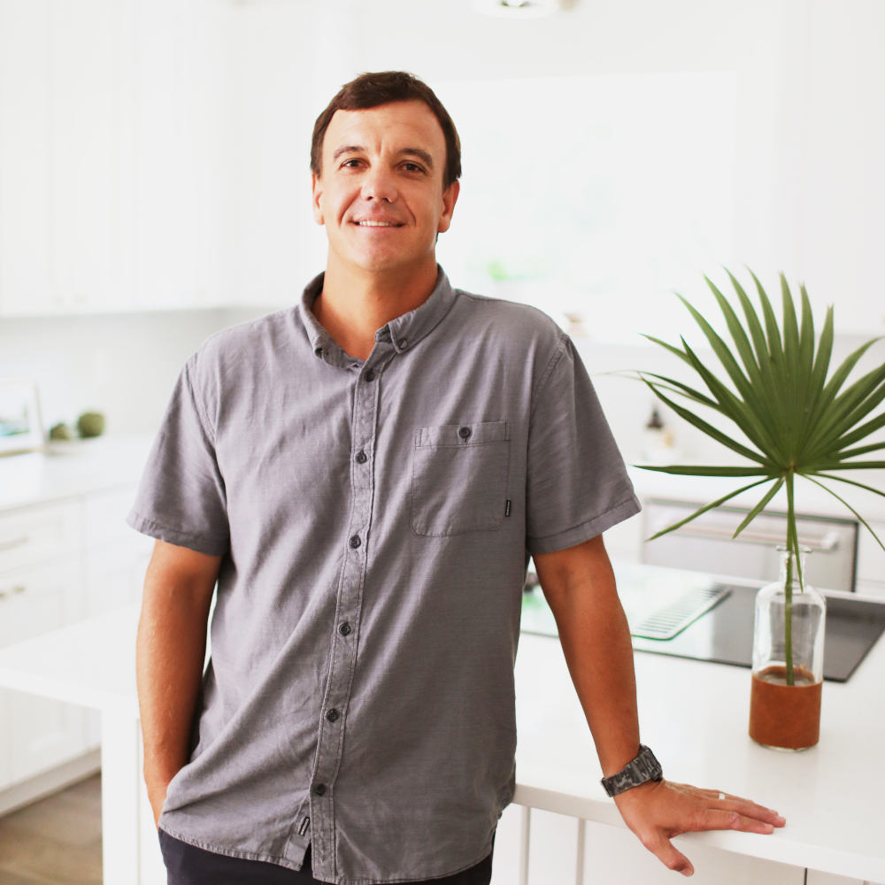

Gabe Kling
Well known for his surfing accomplishments, Gabe Kling surfed on the Championship Tour from the years of 2007-2011. Through the course of his 15 year professional surfing career, Gabe won 6 star events in California and Japan and made the finals in other events, finishing 3rd overall in the qualifying series. Gabe was born and raised in St. Augustine, Florida and after traveling for 15 years and surfing all over the world, Gabe has settled back in his hometown. He started investing in real estate about 15 years ago and is now a Broker Associate at Endless Summer Realty. Gabe and his wife Megan are raising 3 boys together. Gabe enjoys sharing his love of surfing with his boys and they like to spend their free time exploring and traveling. Gabe has had a lifelong partnership and sponsorship with Tory and the Surf Station and he is honored to be a part of the Surf Station Foundation.